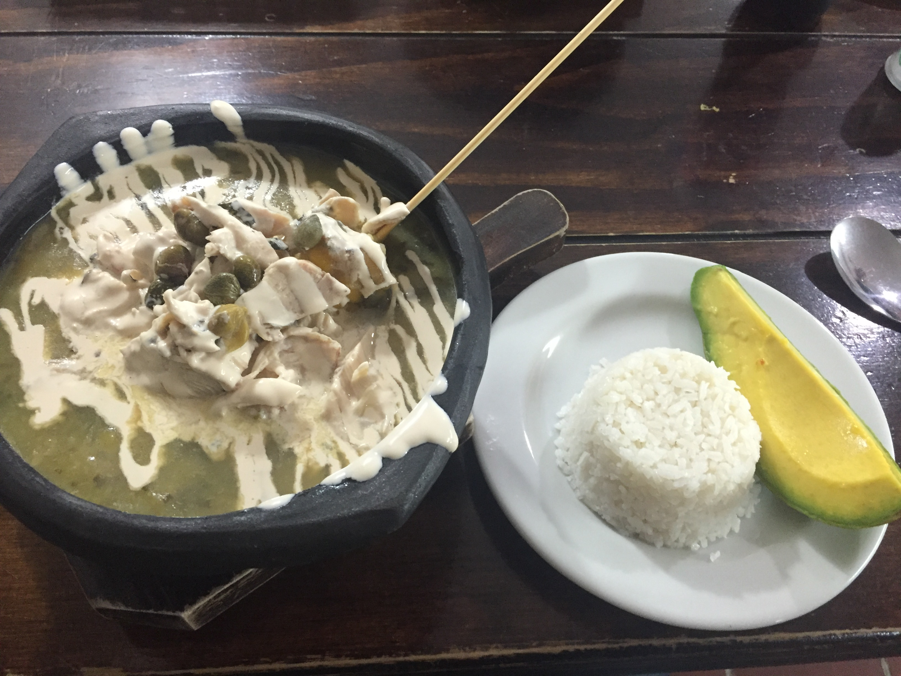

Ajiaco. Another Colombian dish

Ajiaco from Bogotá, Colombia.
Ajiaco is a hearty and comforting traditional Colombian soup, specifically a staple of the capital, Bogotá. The recipe centers around a rich chicken broth and three distinct types of native potatoes—russet, red, and the small, yellow papas criollas—which are essential for the soup's unique consistency and flavor.
As the soup simmers, the starchy papas criollas and russet potatoes dissolve, naturally thickening the broth to a creamy, luxurious texture while the waxy red potatoes maintain their shape to provide textural contrast. The soup is infused with the key, characteristic flavor of guascas, a local herb (often substituted with a mix of oregano and bay leaf outside Colombia), and includes large pieces of corn on the cob.
Ingredients:
- Chicken
- Water or Chicken Stock
- Potatoes:
- White Potatoes
- Red Potatoes
- Yellow Potatoes
- Corn
- Heavy Cream
- Capers
- Avocado
- Arepa
- Cooked White Rice
Steps:
- Combine Ingredients:
- In a large stockpot, combine the chicken breasts, water (or chicken stock), chopped onion, minced garlic, green onions, and the tied bunch of cilantro. Season with salt and pepper.
- Simmer:
- Bring the mixture to a boil over medium-high heat. Once boiling, reduce the heat to a gentle simmer, cover, and cook for 30-40 minutes, or until the chicken is fully cooked and tender. Skim off any foam that rises to the surface.
- Remove Chicken:
- Carefully remove the cooked chicken breasts from the pot and set them aside to cool. Discard the onion, garlic, green onions, and cilantro bunch from the broth using a slotted spoon or by straining the broth.
- Shred Chicken:
- Once the chicken is cool enough to handle, remove the skin and bones (if applicable) and shred the meat into bite-sized pieces using two forks. Set the shredded chicken aside.
- Bring the hogao in a serving dish to the table, so people can place it on top of the beans if they like..
Home